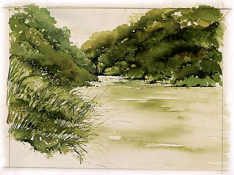
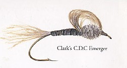
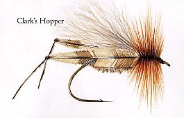
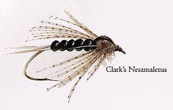
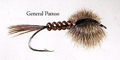
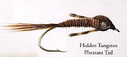
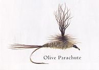
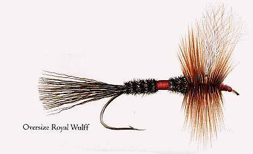
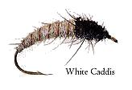

ティップス
1月 CLARK REID 氏 THE WHIRINAKI 川

THE WHIRINAKI 川

Clark's C.D.C Emerger

Clark's Hopper

Clark's Nesamaletus

General Patton

Hidden Tungsten Pheasant Tail

Olive Parachute

Oversize Royal Wulff

White Caddis
フライタイヤー CLARK REID 氏 の紹介
クラーク・レイド氏は、一時期、彼が愛するカントリーミュージックに熱中した以外は、大人になってからの人生のほとんどをフィッシングガイドとフライタイイングに費やしてきた。彼はニュージーランド中をガイドして回ったが、現在はタウポに住んでいる。クラークは名声高いポロヌイロッジ（Poronui Lodge）のガイドとして、信頼できる友、スプリンガースパニエル犬のコールと共に、年間150日以上のガイドをこなしている
クラークはまた、アンプカ・フェザー・マーシャンツ社のデザイナータイヤーとして活躍しており、彼のシケーダ（セミ）パターンは、現在、ニュージーランド国内において最も売れたドライフライである。
これらの記事・画像の著作権は、Michael Scheele 氏 にあります。無断での転載・二次利用をお断りいたします。
Copyright © 2003-2009 Michael Scheele All Rights Reserved.
NZ釣行に向けてのフライタイイング へ
ティップス 目次へ
サイトマップ
ホームへ
お問い合わせ